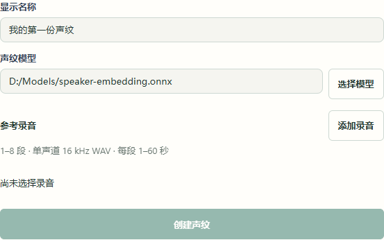
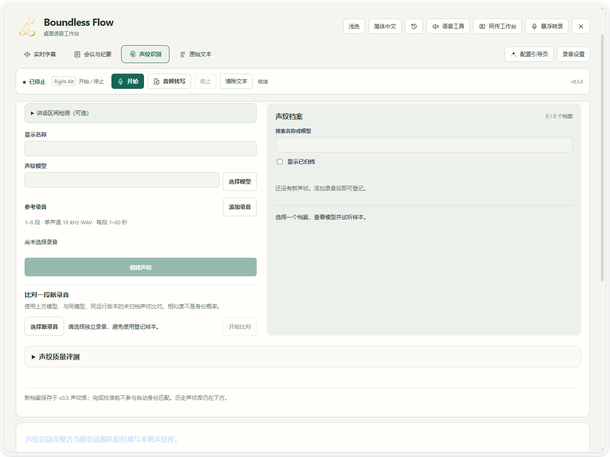
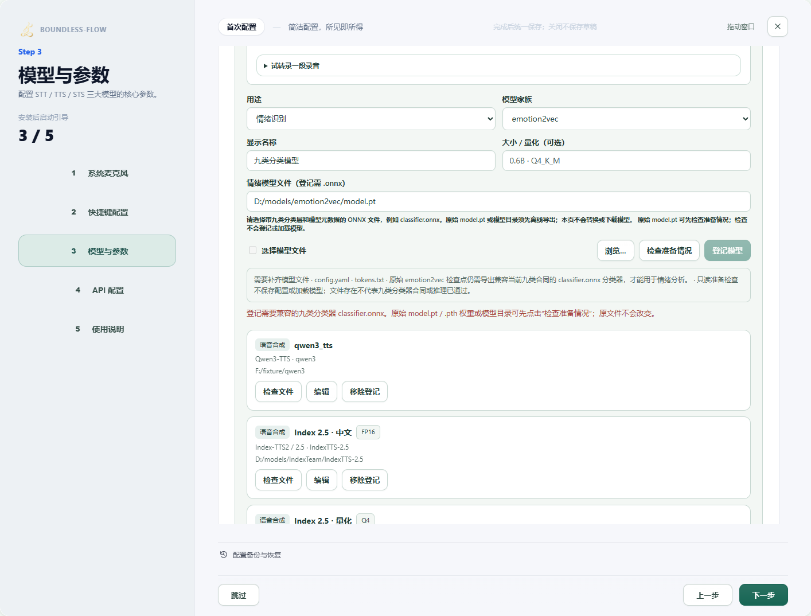
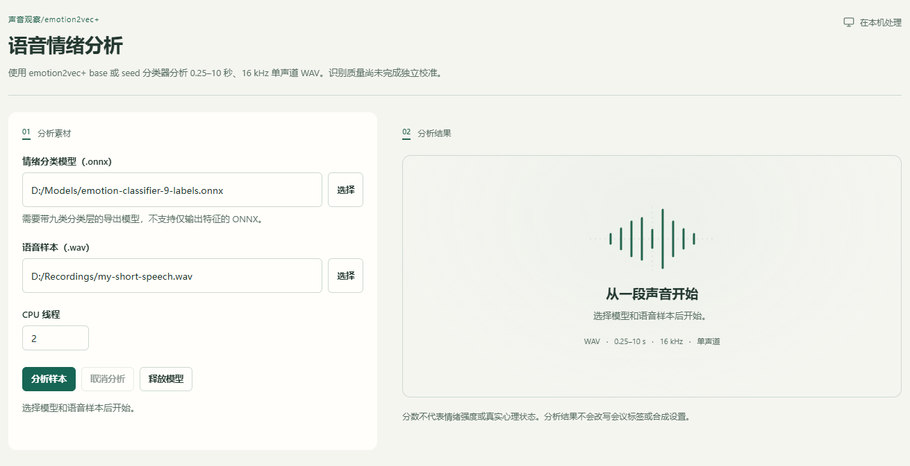

场景教程
声纹：登记、比对与人工复核
用独立录音辅助核对讲话人，保留不确定结果。
你能得到什么
创建可追溯的声纹档案，查看候选比对；相似度不是身份概率。
开始前准备
- 配套的 speaker embedding ONNX 模型；识别文字的 STT 模型和声纹模型不能互相代替。
- 同一人 1–8 段独立单声道 16 kHz WAV，每段 1–60 秒；另一段独立讲话用作测试，不重复登记录音。
- 新档案未校准前仅供候选人工复核；未知人、跨麦克风与自然情绪条件下的质量仍需评估。
- 可选的独立情绪分析需要 emotion2vec+ base/seed 九类分类 ONNX 和0.25–10秒、16kHz单声道WAV。它与声纹模型不同，不会替你创建声纹或自动改会议人物。
逐步操作
- 01
选择声纹模型并填写名称
主界面进入「声纹识别」，填写「显示名称」，点击「选择模型」选择已保存的 speaker embedding ONNX 单文件。下载指南中的「复制模型路径」给出保存目录，仍需在该目录选择实际 .onnx。不要选择 SenseVoice、Whisper、情绪分类或其他文字识别权重。换模型后旧档案可能不兼容。

软件操作示例 · 未启动模型；图中路径请换成自己的文件。点击放大。 - 1选择声纹ONNX单文件，不选文字识别模型。
- 2添加同一人的独立录音，随后等待录音检查。
- 3这里尚无录音，创建按钮暂不可用。
- 02
添加参考音，检查并试听
点击「添加录音」，选择同一人的1–8段独立、单声道16kHz WAV，每段1–60秒。选择后等待录音检查，按每条提示处理；修改录音后可点「重新检查录音」。无变化、有效变化过短、损坏或重复文件不能继续，点该条「移除」后换录音。长静音中仅有孤立点击也不能作为声纹参考；请使用连贯的单人讲话。低音量提示须试听判断，不等于已检测人声。姓名、模型和合格录音尚未齐全时，「创建声纹」不会启用。讲话区间检测是可选复核，不需要为第一次登记另装VAD。
软件操作示例 · 未启动模型；图中路径请换成自己的文件。点击放大。 - 1选择声纹ONNX单文件，不选文字识别模型。
- 2添加同一人的独立录音，随后等待录音检查。
- 3这里尚无录音，创建按钮暂不可用。
- 03
点击「创建声纹」，检查档案
确认参考录音只有目标讲话人后点击「创建声纹」。在右侧声纹档案选择新条目，试听样本并核对名称与模型。未校准档案不用于自动身份匹配；归档只隐藏档案，不删除录音。 处理中可以「取消任务」；等待取消完成后再调整输入，取消不删除原录音或已有档案。

真实软件界面 · 点击放大；图中示例数据不代表你的结果 - 1填写登记对象的显示名称。
- 2选择配套声纹模型。
- 3添加同一个人的参考录音。
- 04
用新录音比对，保留歧义
在「比对一段新录音」点击「选择新录音」，选择另一段独立录音，再点「开始比对」。核对候选分数、前两名分差和被排除档案。候选接近、未校准或无兼容档案时，不把第一名当作确认身份。 如果更换了模型，先选原档案并点击「用当前模型重新提取」，等待完成后再用独立录音比对；旧版本保留，重新提取仍不等于已校准。
真实软件界面 · 点击放大；图中示例数据不代表你的结果 - 1填写登记对象的显示名称。
- 2选择配套声纹模型。
- 3添加同一个人的参考录音。
- 05
应用到会议前，复核原音和范围
会议人物标签先结合原音人工复核，再明确修改对应段落。声纹质量评测需要独立样本和校准；报告原音一致只证明文件与来源记录一致，不证明人物标签或质量正确。输入情绪标签也须结合原音复核。

真实软件界面 · 点击放大；图中示例数据不代表你的结果 - 06
登记情绪模型，先检查准备情况
在「配置引导页 → 模型与参数 → 本地模型库」把用途设为「情绪识别」，再浏览模型文件。选到原始 model.pt 时，点击「检查准备情况」查看缺少的配套文件和分类器要求。此操作不保存配置、不加载模型，也不下载文件。准备好兼容的九类 classifier.onnx 后，在这里登记并保存配置；原始权重不能直接登记为可用分类器。已登记模型的「检查文件」也能查看准备情况。

当前软件配置界面 · 检查结果为受控示例，未运行情绪模型 - 1点击「检查准备情况」，不必先登记原始权重。
- 2按缺项提示准备分类器；图中为受控示例，没有运行模型。
- 07
选短录音，点击「分析样本」，再回听核对
顶部打开「语音工具」，选第06项「情绪分析」，从已配置模型中选择刚登记的分类器。在「语音样本（.wav）」选择0.25–10秒、16kHz单声道WAV，CPU线程可先保留默认2。纯静音或恒定无声信号不能用于情绪分析，请换一段含讲话的录音。模型和录音填好后点击「分析样本」，等待任务完成；需要取消时点「取消分析」并等待收尾。结果是未校准的模型候选，分数不是情绪强度或心理状态。未知、其他或无法区分时，保留不确定结论；本工具不会自动改会议标签或克隆参数。

软件操作示例 · 未启动模型；图中路径请换成自己的文件。点击放大。 - 1选择含九类分类层的ONNX文件。
- 2选择0.25–10秒、16kHz单声道WAV。
- 3填写后可分析；本截图没有运行分析。
- 4分析完可释放模型内存。
- 08
分析完释放内存；克隆调情绪走另一篇
分析完成且不再需要连续试样本时，点击「释放模型」；下次分析会重新加载。离开面板不会替你取消仍在执行的任务，要结束请明确取消。若想让合成声音更开心、平静或激动，查看「保留音色，调整语气与情绪」；分析分数不会自动填入这些生成控制。
软件操作示例 · 未启动模型；图中路径请换成自己的文件。点击放大。 - 1选择含九类分类层的ONNX文件。
- 2选择0.25–10秒、16kHz单声道WAV。
- 3填写后可分析；本截图没有运行分析。
- 4分析完可释放模型内存。


怎么知道成功
档案中的姓名、模型与样本可核对；独立比对有候选或明确不确定提示；人工改名只影响确认的段落。
遇到问题
格式不合格／重复录音
准备单声道 16 kHz、1–60 秒 WAV，使用独立录音。声纹登记不会用补静音掩盖过短材料。
没有兼容档案
使用同一模型和运行版本；需要时在该模型下重新提取旧档案，再使用独立录音比对。
第一名也未确认身份
这是保留不确定性。未校准、分差不足或未知人条件下，先人工核对并收集独立材料，不降低阈值强行匹配。
情绪分析模型不兼容／按钮不可用
确认选择九类分类ONNX及符合格式的短WAV，等待上次任务结束；仅同后缀不代表可用。缺配套组件或出现模型格式错误时，记录完整诊断，不用补静音、重复音频或改后缀绕过检查。